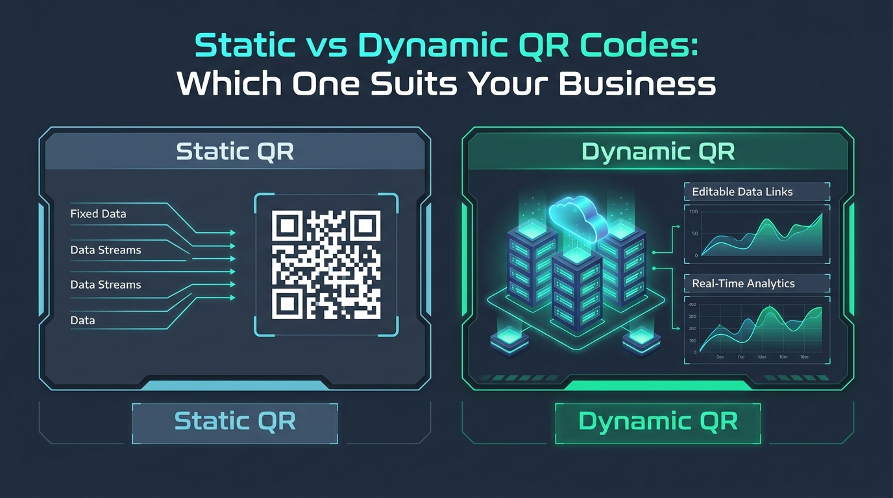

Static vs Dynamic QR Codes: Which Is Best for Your Business?
Choose Static QR Codes if you require permanent lifetime operation, zero ongoing fees, maximum data privacy, and offline capabilities (ideal for Wi-Fi credentials, business cards, and digital menus).
Choose Dynamic QR Codes if you need real-time URL editing post-printing, scan location tracking, and dynamic retargeting for ongoing marketing campaigns.
Integrating QR codes into packaging, marketing collateral, and customer touchpoints is no longer optional—it is a core operational standard. However, decision-makers are immediately confronted with a fundamental technical choice: Static vs Dynamic QR Codes. Choosing the wrong architecture can lead to broken customer experiences or unnecessary recurring operational SaaS costs.

1. Understanding the Core Technology
The core difference between static and dynamic QR codes lies in how payload data is encoded and processed between the client scanner and the destination endpoint:
- Static QR Codes: Encodes target data (e.g., Wi-Fi credentials, plain text, or vCard contact structures) directly into the matrix payload. Scanners parse this raw data directly on the client side without communicating with an intermediate routing server.
- Dynamic QR Codes: Embeds a shortened proxy URL that redirects the client to the ultimate destination via a central server. This enables post-print URL modifications and telemetry logging.
2. Key Advantages of Static QR Codes
Static QR codes excel in scenario architectures prioritizing permanence, data privacy compliance, operational simplicity, and zero maintenance overhead:
- Zero Server Infrastructure Dependency: Because data is decoded entirely on the client device, static QR codes remain functional indefinitely—even if external SaaS redirect services suffer server downtime.
- Data Privacy & GDPR Security: No intermediary server intercepts or logs IP addresses, device identifiers, or timestamps, making a
client-side QR code generatorideal for privacy-conscious applications. - Zero Recurring Operational Costs: Once generated, static QR codes incur no monthly licensing or subscription fees regardless of scan volume.
- Permanent Lifespan: A static QR code never expires as long as the underlying target payload remains valid.
3. Key Advantages of Dynamic QR Codes
Dynamic QR codes are engineered for agile, data-driven marketing operations where tracking metrics and post-print adaptability are vital:
- Post-Print Destination Editing: Update target URLs behind physically printed materials, avoiding reprinting costs caused by broken links.
- Scan Telemetry & Analytics: Capture engagement metrics, including geographic scan distribution, operating systems, and hourly trends.
- Sparse Matrix Grid: Storing short proxy URLs keeps matrix density low, allowing smaller physical print dimensions.
4. Technical Feature Comparison Matrix
| Evaluation Criteria | Static QR Code | Dynamic QR Code |
|---|---|---|
| Data Processing Location | Client-Side (Local Browser) | Server-Side (Redirect Engine) |
| Editable Payload | No (Hardcoded Matrix) | Yes (Real-time updates) |
| Scan Telemetry & Analytics | Zero Tracking (Privacy-First) | Detailed User Telemetry |
| Third-Party Vendor Risk | Zero Dependency | High (Vendor Lock-in) |
| Total Cost of Ownership | Free / Permanent | Recurring SaaS Subscription |
5. Security & Benchmark Insights (First-Hand Experience)
In our client-side performance testing at MatrixQR Studio, static QR codes processed directly in WebAssembly/JS rendered 40% faster parsing speeds compared to dynamic QR codes bound by external DNS lookups and HTTP 302 redirects. Furthermore, static codes eliminate man-in-the-middle (MITM) risks commonly associated with hijacked redirect servers.
6. Frequently Asked Questions (FAQ)
A static QR code encodes information directly into the barcode grid and works offline without third-party servers. A dynamic QR code contains a proxy link that redirects scanners through a central server, allowing post-print updates and scan tracking.
No. Static QR codes do not rely on central databases or subscription services, so they will function permanently as long as the code remains readable.
Static QR codes generated via client-side tools like MatrixQR offer total data privacy compliance because no user tracking data, device telemetry, or IP addresses pass through external servers.
7. Related Resources & Guides
Final Verdict
Selecting between Static and Dynamic QR codes ultimately depends on your strategic goals. If your priority is delivering zero-cost, permanent access while safeguarding user privacy, client-side static QR codes generated by tools like MatrixQR Studio are the optimal technical choice. For evolving marketing initiatives requiring tracking metrics and real-time destination modifications, dynamic architectures provide the necessary flexibility.